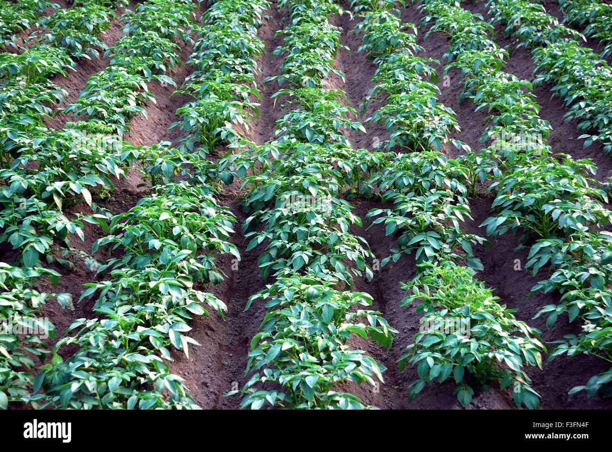
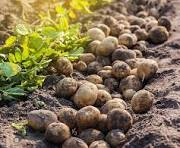
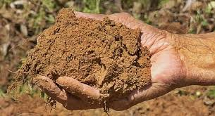
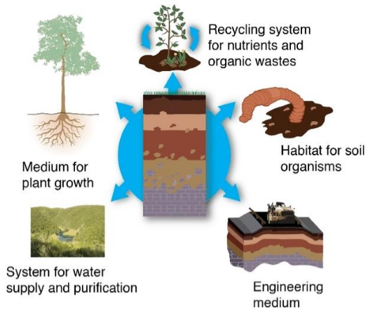
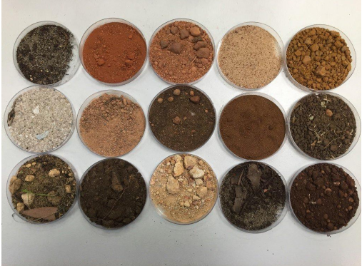

Welcome to our Agricultural Advisory System
Our system provides farmers with timely and personalized advice
to enhance crop yields and promote sustainable farming practices.
Explore the latest agricultural insights and recommendations.
Farmer Advisory
A Web Portal for the purpose of helping farmers in crop planning and crop handling built as a part of Course project CS305.
The portal gives information on Crop Handling techniques (water requirements, soil type requirement, etc) as well as recommended crops based on attributes such as location. The portal also provides a discussion space for farmers and experts in the related fields.

OPTIMAL YIELD
Several factors contribute to achieving a better harvest in agriculture. Here are some key reasons:
Soil Quality: Rich and fertile soil with appropriate pH levels and adequate nutrients supports healthy plant growth, leading to better yields.
Climate and Weather Conditions: Favorable weather conditions, including optimal temperature, adequate rainfall, and appropriate humidity levels, promote robust plant growth and minimize the risk of crop damage due to extreme weather events.
Water Management: Efficient irrigation practices ensure that crops receive the right amount of water at the right time, preventing both water stress and waterlogging, which can negatively impact yields.

Crop Variety Selection: Choosing crop varieties that are well-suited to the local climate, soil type, and pest resistance can significantly improve yield outcomes.
Pest and Disease Management: Implementing effective pest and disease control measures, such as integrated pest management (IPM) strategies, helps protect crops from damage and minimizes yield losses.
Nutrient Management: Providing crops with the appropriate balance of essential nutrients through fertilization and soil amendments ensures healthy plant growth and higher yields.
Weed Control: Managing weeds effectively through techniques such as mechanical cultivation, mulching, and herbicide application prevents competition for resources and optimizes crop growth.
Timely Planting and Harvesting: Planting crops at the optimal time and harvesting them when they reach maturity ensures maximum yield potential and quality.
Proper soil utilization, also known as sustainable soil management, offers numerous advantages for agriculture, the environment, and society as a whole. Some of the key benefits include:
Improved Crop Yields: Proper soil utilization ensures that soil fertility is maintained or enhanced over time, resulting in higher crop yields. This is achieved through practices such as soil conservation, organic matter management, and balanced nutrient application.
Enhanced Soil Health: Sustainable soil management practices promote soil health by maintaining soil structure, reducing erosion, and enhancing soil biodiversity. Healthy soils are more resilient to environmental stresses and provide a better environment for plant roots and soil organisms.
Reduced Soil Erosion: By implementing conservation practices such as contour farming, terracing, and cover cropping, proper soil utilization helps reduce soil erosion caused by water and wind. This protects valuable topsoil, preserves soil fertility, and maintains land productivity.

Climate Change Mitigation: Healthy soils act as a carbon sink, sequestering carbon dioxide from the atmosphere and helping mitigate climate change. Practices such as conservation tillage, crop residue management, and agroforestry enhance soil organic carbon storage and contribute to climate change adaptation and mitigation efforts.
Enhanced Biodiversity: Proper soil utilization promotes habitat diversity and supports a wide range of soil organisms, including beneficial microbes, earthworms, and insects. Healthy soils provide essential ecosystem services, such as nutrient cycling, pest regulation, and soil structure improvement, which benefit agricultural productivity and biodiversity conservation.
Sustainable Land Use: Sustainable soil management practices help maintain the long-term productivity and resilience of agricultural lands, ensuring their viability for future generations. By adopting practices that conserve soil resources, farmers can sustainably utilize land for food production while preserving natural ecosystems and biodiversity.
Economic Benefits: Improved crop yields, reduced input costs, and enhanced ecosystem services associated with proper soil utilization can lead to economic benefits for farmers and rural communities. Sustainable soil management practices contribute to long-term agricultural productivity, profitability, and livelihood security.
Soil Data
Importance of Soil
Soil allows the growth of plants. It supplies water and nutrients that are required in the growth of plants.
The soil is the main part of agriculture. Different types of soils support different kinds of crops. Without agriculture, food, shelter and clothing are not possible.
Many microorganisms live in the soil.
Underground water is used for various purposes.
Soil Profile
The soil consists of distinct layers which are also called Horizons of the Soil.
The Soil Profile is a vertical section of the soil which depicts all the layers of the soil. The layers of the soil can be seen if we dig deep through it like while creating a well or while laying the foundation of a building.
Humus – The decaying matter in the soil is called Humus.
Weathering - Soil is formed when rocks break down. This process is also called Weathering. The weathering of rocks takes place because of rains, flowing water, winds, temperature and climatic conditions of a place.
Parent Rock - The nature of the soil that is its texture and availability of minerals depends upon the rock from which it is formed. This rock is often called as the Parent Rock.

Figure 3: Soil Profile
Soil Information
Components of Soil:
- Mineral Particles:
- Sand(largest particles)
- silt(medium-sized particles)
clay (smallest particles)
- Organic Matter:
- Provides nutrients, improves soil structure, and retains moisture
Decomposed plant and animal materials
- Water:
- Essential for plant growth
- Varies in availability depending on soil texture and structure
- Air:
- Helps in maintaining soil structure and promoting microbial activity
Required for respiration of plant roots
Soil pH:
Soil pH is a measure of acidity or alkalinity on a scale of 0 to 14.
Optimal pH for most plants is between 6.0 to 7.5.
Optimal pH levels vary for different plants, but generally, most plants prefer slightly acidic to neutral soil (pH 6.0 to 7.5).
pH influences nutrient availability; certain nutrients become more or less available at different pH levels.
Types of Soil:

Soil types are classified based on their composition and texture:
Sandy, silty, clay, loamy
Sandy Soil
Large particles, drains quickly, low fertility, poor water and nutrient retention
Suitable for crops that prefer well-draining soil like carrots, radishes, and potatoes
Silty Soil
Medium-sized particles, retains moisture well, fertile
Suitable for a wide range of crops including wheat, barley, and spinach
They are generally found near the water bodies like river banks and lakes.
They are rich in nutrients, highly fertile and hence are suitable for agriculture.
They are often mixed with other soils to improve the fertility of the soil.
Clay Soil
Small particles, retains water and nutrients but poorly drained, heavy and compact
Suitable for water-loving crops like rice and certain vegetables such as cabbage and broccoli
Loamy Soil
Ideal soil type, balanced mixture of sand, silt, and clay
They are combination of sandy, clayey and silty soil.
They contain good amounts of calcium and have a high pH level.
They are also called Agricultural Soils because of their fertility and appropriate texture.
Retains moisture well while allowing for good drainage, highly fertile
Suitable for a wide variety of crops including corn, tomatoes, and beans
Soil Nutrients:
Plants require various nutrients for their growth and development. These nutrients can be categorized into two main groups:
Macronutrients:
Essential for plant growth, development, and overall health
Nitrogen (N), Phosphorus (P), Potassium (K)
Micronutrients:
Iron (Fe), Zinc (Zn), Magnesium (Mg), etc.
Required in smaller quantities but equally important for plant growth and function
Relevant Crops for Different Types of Soil:
Different crops thrive in different soil types due to their specific requirements for water, nutrients, and soil structure. Here are some examples:
Sandy Soil
Carrot
Radishes
Potatoes
Peppers
Tomatoes
Silty Soil
Wheat
Barley
Oats
Spinach
Lattuce
Clay Soil
Cabbage
Peas
Rice
Cauliflower
Broccoil
Loamy Soil
Corn
Beans
Tomatoes
Squash
Strawbaries
Soil Colour
Different soils have different colours as well. This is because of the minerals and nutrients present in the soil. For instance, some soils are black in colour because of the presence of humus and minerals while some soils are red in colour because they have iron in large quantities in them.
Soil and Crops
Different kinds of soils are found in different regions because of the following factors that decide the soil structure of that place:
temperature
humidity
rainfall
sunlight
winds
The type of crops that will grow in the soil depends upon these factors as well as the properties of a soil.
SOIL PROPERTIES
| Property |
Sand |
Silt |
Clay |
Loam |
| Water Holding Capacity |
Low |
Medium to High |
High |
High |
| Drainage Rate |
High |
Low to Medium |
Very low |
Very Low |
| Cohesion Between Particles |
Very Low |
Medium to High |
Very High |
Very High |
| Organic Material Content |
Low |
Medium to High |
Medium to High |
High |
| Shrink & Swell Potential |
Low |
Medium to High |
High |
High |
Different Properties of Soils
Conclusion:
Understanding soil components, pH, types, nutrients, and suitable crops is crucial for successful agriculture. By knowing the characteristics of different soils and their interactions with plants, farmers can optimize crop production and maintain soil health for sustainable agriculture practices.
Crop Planting Guide
Neutral pH (around 6.0 - 7.0)
Loam Soil
- Beans
- Peas
- Carrots
- Beets
- Lettuce
- Corn
- tomatoes,
- strawberries
- Spinach
Moderate temperatures, well-distributed rainfall
Slightly Acidic to Neutral pH (around 5.8 - 6.5)
Loam Soil
- Tomatoes
- Cabbage
- Cauliflower
- Broccoli
- Brussels Sprouts
Moderate temperatures, adequate sunlight, regular rainfall
Slightly Acidic pH (around 5.5 - 6.5)
Cooler temperatures, adequate sunlight, Moderate rainfall
Slightly Acidic to Neutral pH (around 6.0 - 7.0)
Loam Soil
- Cucumbers
- Squash
- Pumpkins
- Melons
Warm temperatures, plenty of sunlight, Adequate rainfall
Neutral to slightly Alkaline (around 6.0 - 7.5)
Loam Soil
Warm temperatures, adequate sunlight, Regular rainfall
Slightly Acidic to Acidic pH (around 5.0 - 6.5)
Loam Soil
Cooler temperatures, adequate sunlight, Regular rainfall
Weather Data
Agriculture weather is critical for securing the yield of most field crops. However, farmers and landowners who rely on publicly available agriculture weather data often find that the forecasts made by these sources don’t match up with what they see in their fields. This disparity might result in heavy losses, especially when severe weather strikes unexpectedly. Therefore, growers should only use agriculture weather forecasts that have been carefully compiled, specifically for their fields, using data from meteo stations, sensors, and satellites.
Concept And Importance Of Weather In Agriculture
clickherefor more
When we remark on the crucial role of weather in agriculture, we are not exaggerating; in fact, we may be understating its significance. If you want to maximize your agricultural output and increase crop yields , you must work in conjunction with the meteo conditions.
Weather has a significant impact on the prevalence of pests and diseases, the availability of water, and the amount of fertilizer needed to grow crops. Farmers rely on climate patterns and weather forecasting in agriculture to determine which crops to cultivate and when to sow them. The majority of farming techniques depend on favorable meteorological conditions. As an illustration, precision irrigation relies on the amount of rain that falls on a field, soil solarization requires high temperatures, etc.
What is the relationship between weather, climate, and agriculture?
Climate change and agriculture are intertwined in crucial ways. If temperatures rise, farmers may be able to reap the benefits of growing crops suited to their climate or move to growing crops more suited to warmer regions. If the increased temperature is higher than optimal for a given crop, however, agriculture production will suffer. In general, it may become more challenging to cultivate crops in the same manner and locations as a result of climate change .
Farmers most frequently use short-range forecasts, which are predictions made between 1 and 7 days in advance. In the meantime, medium-range (up to a month), long-range (up to a year), and hazardous weather forecasts for agriculture can all be extremely helpful in field activity planning. Even though severe weather can come abruptly, wreaking havoc on crops and even impacting the viability of seeds in storage, local meteorological forecasts help farmers prepare for these events, minimizing or even eliminating their harmful effects.
How Does Weather Affect Agriculture?
Most crops grown in fields rely entirely on rain and sunshine for their survival. Meteo conditions also affect the well-being and food availability of livestock.
Agriculture losses from severe weather can be devastating. High temperatures, low rainfall, flooding, and sudden freezes negatively affect crops, particularly during the most vulnerablestages of plant growth, such as seed germination. Studies have shown that drought is typically a major reason for decreased grain yields and economic losses on farms .
Indirect effects of weather on agriculture crops include shifts in soil processes, dynamics of nitrogen uptake, and the spread of pest populations.Soil erosion nutrient deficiency and due to heavy rain and the opposite phenomenon,soil salinization during the dry spell, are all examples of the indirect impact of weather on agriculture.
With all of the potential direct and indirect effects of meteo conditions, agriculture producers should plan ahead of time and count on accurate and dependable data.
Why Is Public Weather Station Data Insufficient For Agricultural Needs?
Given the significance of agricultural weather forecast accuracy, it’s easy to see why companies and organizations in this sector are so eager to acquire the best available information. With multiple open-access public sources, it may seem that they might just pick one to obtain their desired agricultural meteorological reports. However, big players in the agriculture industry prefer reliable agricultural weather stations and data providers for one main reason: accurate data helps them increase profits while spending less.
Generally, meteorological stations covering a certain territory around them are the source of global weather data for agriculture monitoring, and the bigger the distance, the less accurate the forecast is. Typical forecasting models allow for prognoses based on specific conditions and their combinations. However, such suggestions are far from precise and cannot always assist in making the right decisions or insuring risks in agriculture.
Say, for instance, that a certain field’s crops don’t receive adequate moisture despite the fact that rain is forecast for the area. This is an example of why public weather data is insufficient for agriculture.